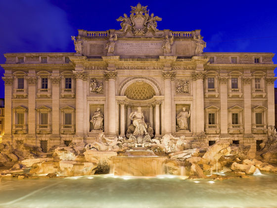

Manhattan Bridge är den mellersta av de tre broarna som går mellan Manhattan och Brooklyn i New York. De övriga två är Brooklyn Bridge och Williamsburg Bridge. Manhattan Bridge är en hängbro som går över East River i New York City mellan Nedre Manhattan (vid Canal Street) och Brooklyn (vid Flatbush Avenue Extension). Bron öppnades den 31 december 1909 och designades och byggdes av den polske broingenjören Ralph Modjeski.

Lutande tornet i Pisa (italienska: Torre pendente di Pisa är domkyrkans fristående klocktorn (kampanil) i staden Pisa i nordvästra Italien. Det cirka 55 meter höga tornet är mest känt för att det lutar. Det började byggas 1173 och färdigbyggdes runt eller efter mitten av 1300-talet.
Colosseum är en gigantisk amfiteater som står mitt i Rom. Den mäter 524 meter i omkrets och 48 meter i höjd. Här brukade Roms befolkning en gång i tiden samlas för att se gladiatorspel, djurfäktningar, avrättningar och teater.
Fontana di Trevi, Trevifontänen, är en imposant fontänbyggnad belägen vid Piazza di Trevi i centrala Rom. Den projekterades av Giovanni Lorenzo Bernini och fullbordades av Nicola Salvi 1762. Trevi är en etymologisk förvanskning av trivio, ungefär "tre gator" (ursprungligen sammanstrålade tre gator på torget (piazzan) framför fontänen).